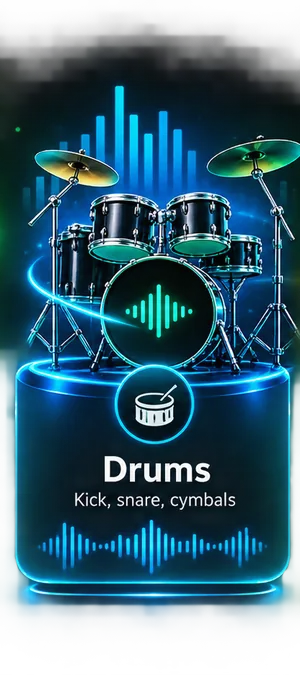
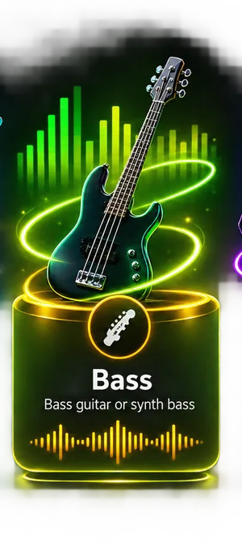
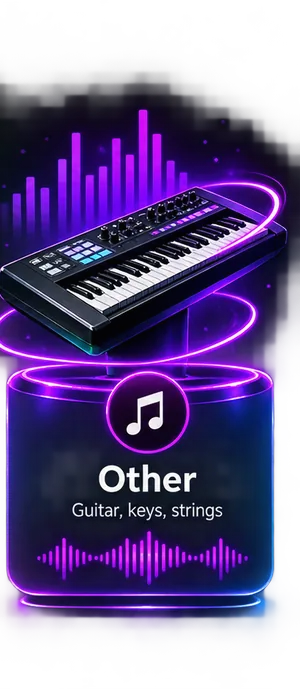
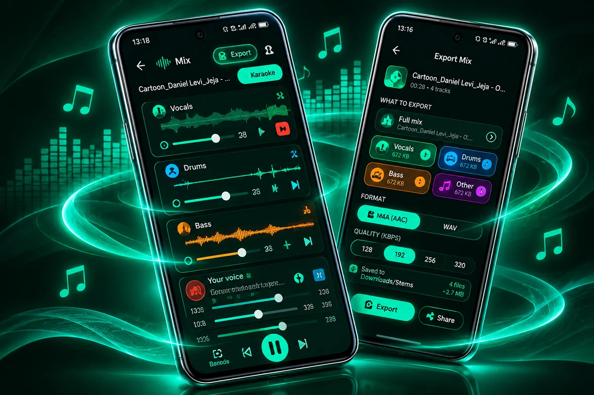

AI Stem Separation
A Hybrid Transformer Demucs model splits a finished song into four stems: vocals, drums, bass and other. Choose which stems to create.
Free AI audio splitter
Separate any song into individual audio stems with our free online AI stem splitter. Create karaoke tracks, isolate vocals, and extract instrumentals directly in your browser.
Choose a song, pick the stems you need, then preview and download them.
or drop an audio file here
MP3, WAV, M4A, FLAC, OGG and other formats your browser can play
Tip: reload this page once if splitting feels slow, so the browser can use more CPU threads.
The AI engine (about 165 MB) downloads the first time and is then kept on your device. Your music never leaves it.
Only the tracks you choose are created. The AI always works on the whole song.
Starting...
Keep this tab open and in front. Browsers slow down tabs in the background, and splitting a song takes a few minutes.
Waiting? Try the Android appMP3 export, voice recording and a song library›A free online stem splitter and karaoke maker that works in the browser.
A Hybrid Transformer Demucs model splits a finished song into four stems: vocals, drums, bass and other. Choose which stems to create.
Press Karaoke in the mixer to mute the lead vocal and keep the backing music, then export it as a WAV file.
Solo or mute the drums, the bass or the rest of the band to practise, study or collect samples you have the right to use.
The AI runs inside your browser. Your audio file is not uploaded, and nothing needs to be installed.
Choose all of them, or only the ones you need.



Three steps from a finished song to separate stems.
Choose a song or drop a file. MP3, WAV, M4A, FLAC and OGG are common formats that work in most browsers.
Pick the stems you want and start. The model works on your device, and a progress ring shows how far it is.
Play the stems together, mute or solo each one, then download WAV files, or one ZIP for several tracks.
Use only music you own or have permission to use.
Learn how to remove vocals, make karaoke tracks and get cleaner results.
Audio Splitter Pro is our Android app. It runs the AI right on your phone, works without internet once installed, and adds even more features.

♫♪♩Yes. You can split songs and download the stems for free. There is nothing to install and no account to create.
No. The AI model is downloaded to your browser and the separation runs on your own device. Your audio file is not sent to us or to any other server.
Any audio file your browser can decode. This usually includes MP3, WAV, M4A/AAC, FLAC and OGG. If a file cannot be read, try converting it to MP3 or WAV.
The AI model (about 165 MB) is downloaded the first time and stored in your browser. Next time it loads from your device.
It depends on the length of the song, the quality setting and your device. A computer is usually faster than a phone. Keep the tab open while it works.
The AI needs a lot of memory. Phones have less than computers, so long songs can fail. Close other tabs, try a shorter song, or use a computer.
Yes. Split the song, press Karaoke in the mixer to mute the vocals, and export the Full mix as a WAV file.
Only if you have the rights to the original music. AudioSplitAI is a tool, and you are responsible for how you use the files you export.